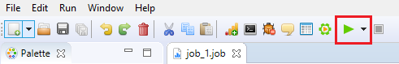
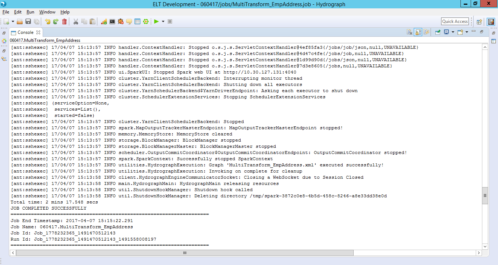

To Run a job on cluster, make sure of below things,
None of the components in the job should have error/warning icon on it
Execution utility script along with its dependent jars are present at the location you wish to run the job on cluster.
The Execution utility script is used to run the job submitted by Hydrograph UI.

Make sure the input file paths from the cluster are correctly configured in the Job.

Click on Run button or press CTRL + R

Select Remote. This will expand Run Configuration Settings window requesting location and authentication details of the edge node,
Edge Node - name of the server where the job will execute
User - username to login on edge node
Password - password to login on edge node
Key File - Key file is the authentication file, used to authenticate to user.
Run Utility - location of the script on edge node
Project path - location where the project related files will be copied
.

Click on OK. Provide parameter values, if any, in the parameter grid and click OK.

Watch Job Run log in the console and wait for the job run to complete.
